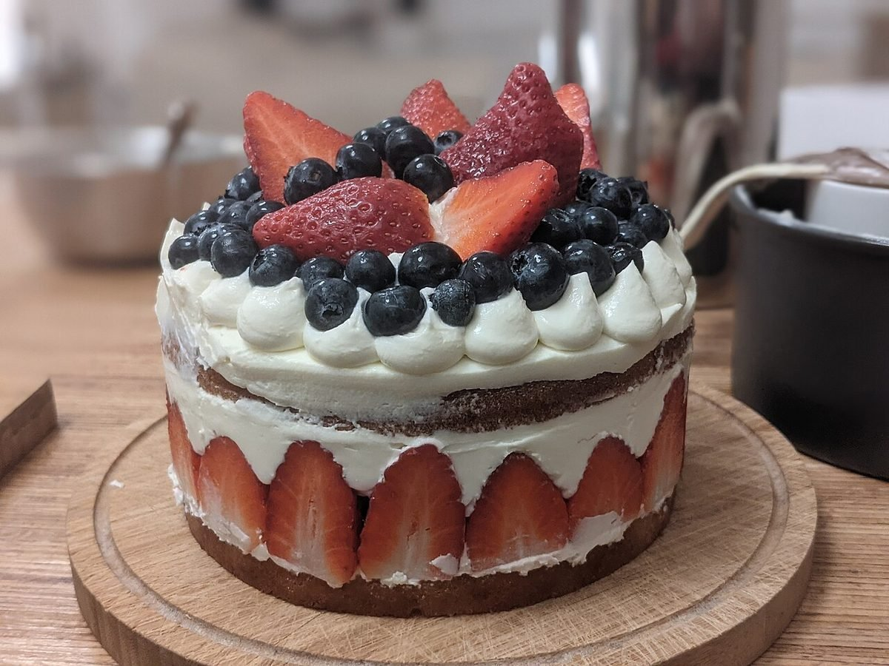
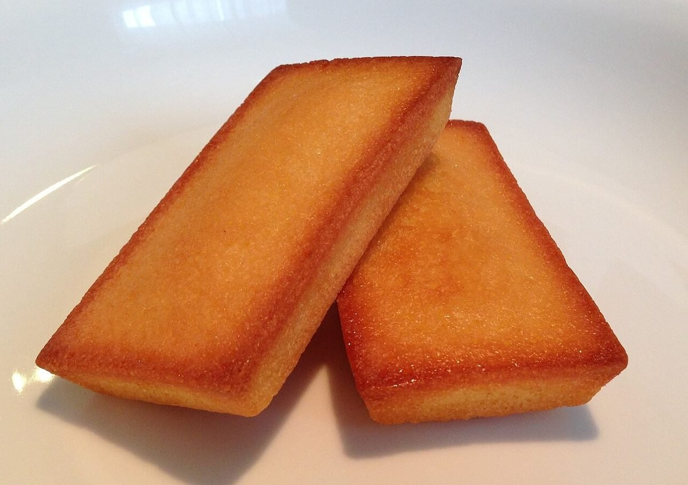
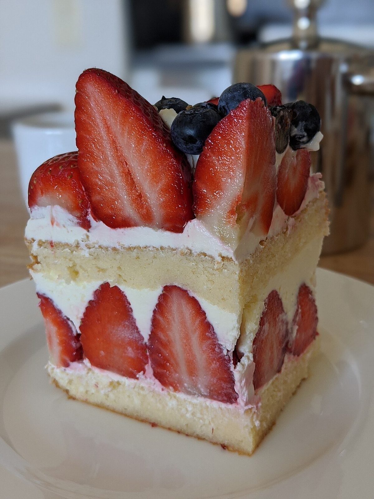

お祝いの日に、家族みんなで選びました。箱をあけたときの笑顔が忘れられません。
口コミ
以下は「こんな声が寄せられたら」というイメージの創作例です。実際のお客様の声ではありません。

お祝いの日に、家族みんなで選びました。箱をあけたときの笑顔が忘れられません。

ちょっとしたお礼に持っていったら、とても喜ばれました。また買いに行きたいです。

仕事帰りに立ち寄って、自分へのごほうびに。ほっとする時間になりました。
お店の実際の声は、掲載のご許可をいただいたうえで差し替えます。